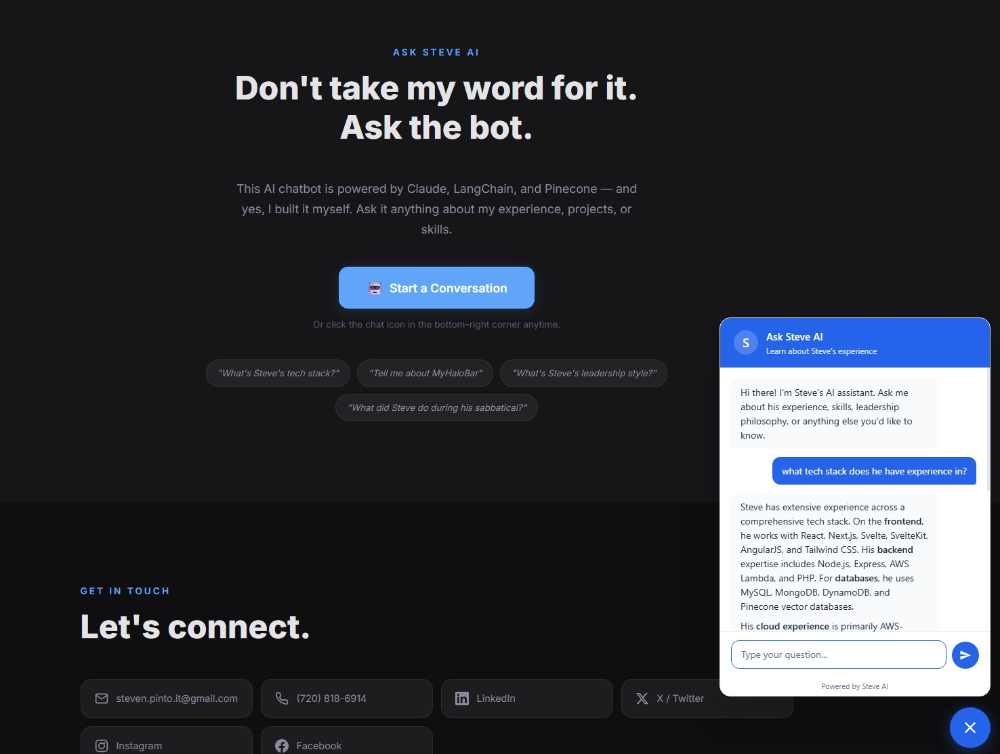
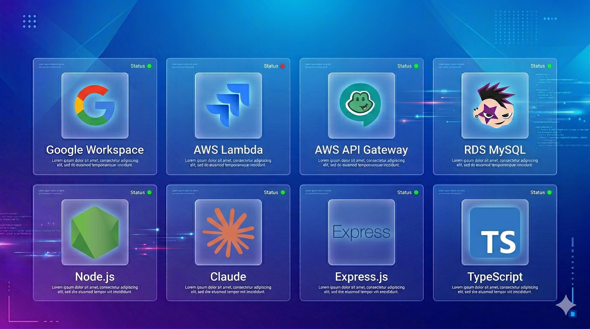
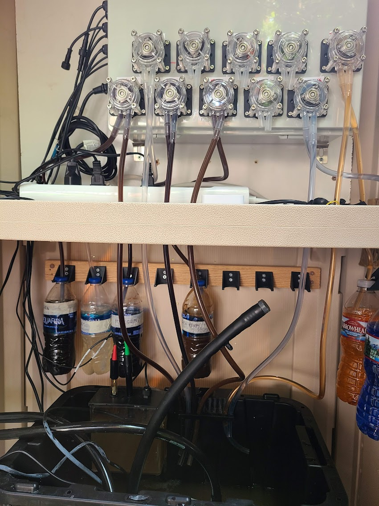

Steven
Pinto.
IT Director leading enterprise technology, security & transformation.
Twenty years running enterprise IT across PE-backed manufacturing, healthcare, and global beverage operations. I lead teams, own the strategy, and still ship code when it matters.
A career spent leading and building.
Four director-level postings across healthcare, beverage, and manufacturing. Plus a deliberate 2025 sabbatical to actually go build things.
IT Director
Ampersand Brands · Hammond's Candies, Lolli & Pops
Leading enterprise IT across a PE-backed retail and manufacturing organization. Driving ERP transformation to NetSuite, Microsoft 365 tenant consolidation, Zero Trust security, and AI/data platform strategy.
Independent projects & study
Sabbatical · Applied AI, IoT, and serverless
After 15 years in a director chair, I took a year to actually build. Shipped an IoT cocktail platform, automated my home on Home Assistant, built and deployed AI applications, and trained small models.
Director of IT & Security
Park Street Companies · Back-office services for 1,000+ beverage brands
Directed a global IT team across U.S. and E.U. operations supporting 1,000+ alcoholic beverage brands. Led cloud migrations, built serverless architecture, stood up Zero Trust security, handled M&A IT integration, and shipped internal applications across 15 years of growth.
Director of IT & Security
Doctor Diabetic Supply · Healthcare / direct-to-consumer
Centralized IT infrastructure, reduced hardware spend by $50K+ annually, and owned IT security for a healthcare organization serving 12,500+ customers per year.
Beyond leadership, I build.
Things I've built outside the day job: products, platforms, and a few internal tools. My take is that IT leaders who stop building lose the ability to judge what's actually hard.

MyHaloBar
An IoT-powered automated cocktail platform with AI-generated recipes, hardware pump control, and real-time ordering.
Visit site →
SaaS-Aware
A shadow-IT detection platform with a Chrome extension. Tracks unauthorized SaaS usage and enforces SSO adoption.
Visit site →
DevTel Home Intelligence
Smart home design, installation, and automation services built on Home Assistant: lighting, security, and whole-home control.
Visit site →
Ask Steve AI
The assistant in the corner of this site. Dual-agent RAG architecture built on Claude, LangChain, and Pinecone.
Try it ↓
Employee Lifecycle Platform
Integration platform connecting Google Workspace, Jira Service Desk, FreePBX, and Snipe-IT for automated onboarding and offboarding.

Nutrient Dosing System
A custom-built automated nutrient dosing system combining electronics, IoT hardware, and software control.
View photos →What I'm exploring right now.
Recent articles.
Don't take my word for it. Ask the bot.
A generative AI chatbot trained on my background, built on Claude, LangChain, and Pinecone. Ask it anything about my experience, projects, or leadership style.
Let's talk.
Currently IT Director at Ampersand Brands, and open to conversations about senior IT leadership roles. The fastest way to reach me is email.